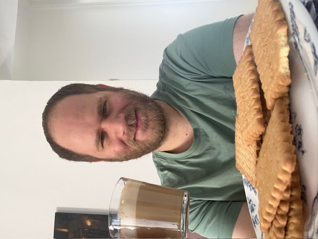
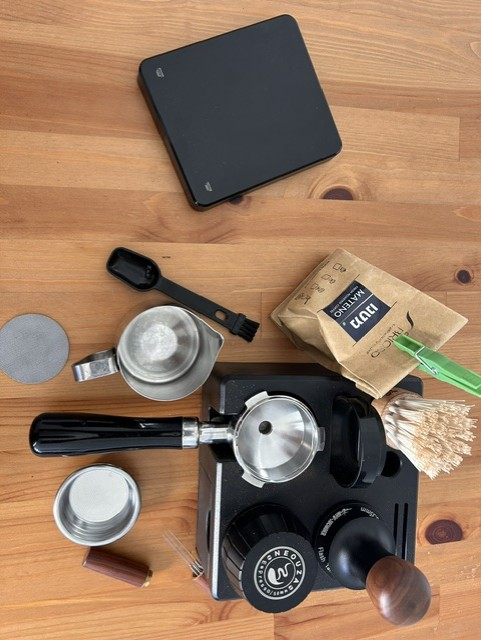
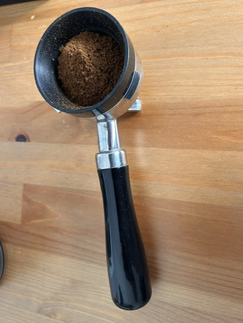
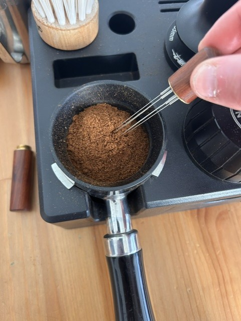
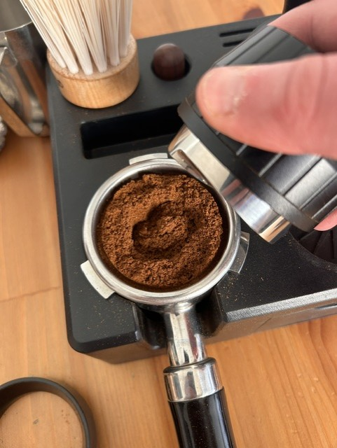
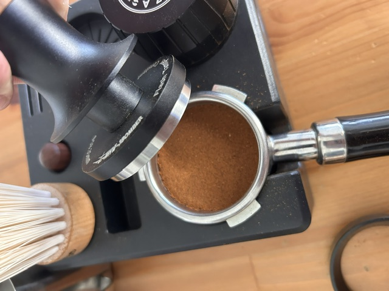
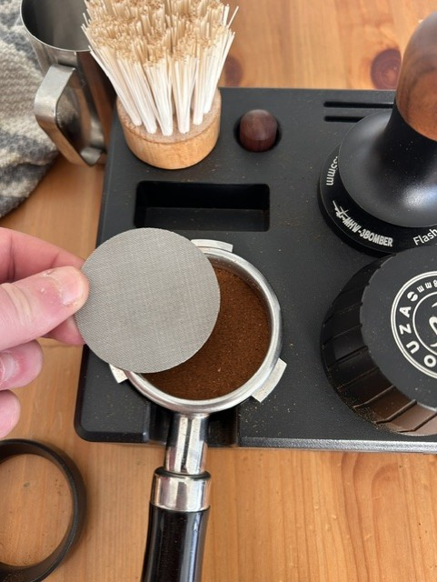
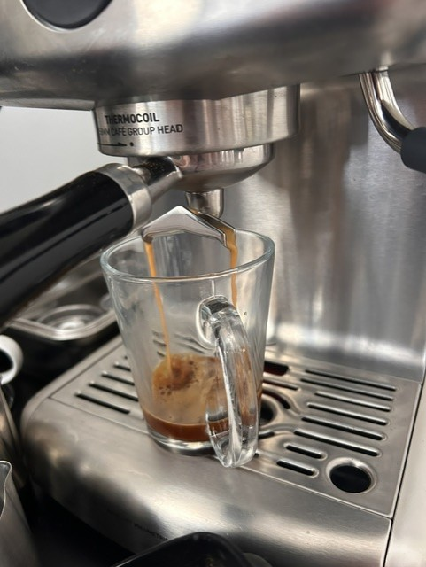
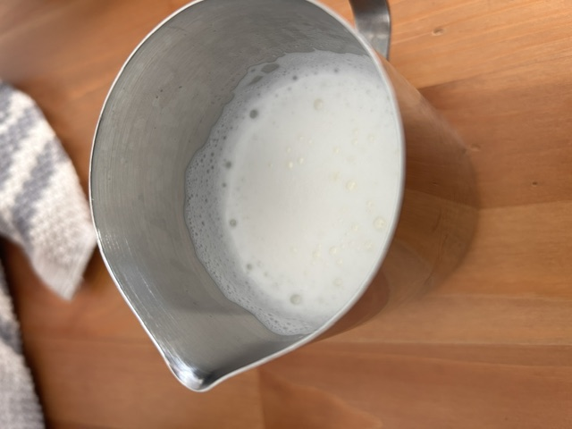
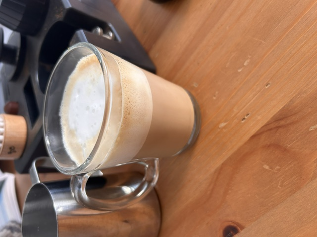

How to make the best cappuccino by Ori Dvori
Hello and welcome to my site!
My name is Ori Dvori, and I super excited to show you how to make the
best cappuccino like an italian style. Just serve it with biscuits and
enjoy the moment ☕ 😍

My story
I started making high-quality cappuccino about three years ago. One
day at work, I tried to make a cappuccino using an espresso machine,
but the result was terrible. The coffee tasted very sour, looked too
dark, and even adding sugar didn’t help. I ended up pouring it down
the sink. That moment made me curious. I began imagining the perfect
cup of coffee — a rich espresso combined with smooth, fresh milk,
creating a balanced and enjoyable taste. I wondered if I could learn
to make coffee that people truly enjoy and remember. I even imagined
myself competing in a barista competition, preparing a cappuccino for
judges and impressing them with the taste and presentation. So I
started learning. I searched online to understand how to become a
better barista and what equipment I needed. I ordered my first tools
and began practicing at home. At the beginning, it wasn’t easy, and my
cappuccinos were far from perfect. But like anything in life,
improvement came with practice. After many attempts, I finally started
to understand the process and develop the skills needed to make a
great cappuccino. I also took a barista course at a local coffee shop,
where I learned professional techniques and improved my consistency.
Today, I enjoy making cappuccino for my friends and family, and I love
seeing their reactions when they taste a well-made cup. In this site,
I want to share my knowledge and experience with you, so you can also
learn how to make an excellent cappuccino at home. ☕ 😊

The steps for making the best cappuccino
In this chapter will show you the steps to make cappuccino, that
people will ask you to brew more ☕ 😍
Step 1: grind the coffee beans
First, you need to prepare a shot of espresso. Use a high-quality
coffee beans. Use a scale to measure the coffee and grind it to a fine
consistency. I personally love single shot espresso, so I measure 9
grams of coffee beans and grind them to a fine consistency. I have a
grinder with 25 grinding levels, so I grind at level 23. I don't
recommend grinding at level 25 because it can cause over-extraction
and a bitter taste.

Step 2: use needles to break coffee grounds
After grinding the coffee, use a needle to break up any clumps of
coffee grounds. This will help ensure an even extraction and a
better-tasting espresso.

Step 3: use the coffee leveler
After breaking up the clumps, use a coffee leveler to level the coffee
grounds in the portafilter. This will help ensure that the coffee is
evenly distributed and will help prevent channeling during the brewing
process.

Step 4: tamp the coffee grounds
After leveling the coffee grounds, use a tamper to press the coffee
down firmly and evenly. This will help ensure that the water flows
through the coffee evenly and will help prevent channeling during the
brewing process. a good tamping pressure is around 30 pounds of force.
You can use a kitchen scale to practice your tamping pressure and get
a feel for how much force you need to apply.

Step 5: put the puck screen
After tamping the coffee grounds, place a puck screen on top of the
portafilter. It will help to distribute the water evenly. After that,
you can put the portafilter into the machine.

Step 6: steam the milk
While the espresso is brewing, steam the milk to create a smooth,
velvety texture. This will be used to create the foam for your
cappuccino. To steam the milk, fill a stainless steel pitcher with
cold milk and place the steam wand just below the surface of the milk.
Tilt the pitcher and put your hand around the pitcher. Turn on the
steam and slowly lower the pitcher to create a whirlpool effect.
Continue steaming until you feel the pitcher is hot to the touch,
which should take around 30-60 seconds. Be careful not to overheat the
milk, as it can scorch and develop a burnt taste.


Step 7: pour the milk
Once the milk is steamed, pour it into the espresso to create your
cappuccino. Start by pouring the milk into the center of the cup, then
move the pitcher in a circular motion to create the desired pattern.
Enjoy your delicious cappuccino! You can also add some cocoa powder or
cinnamon on top for extra flavor.
